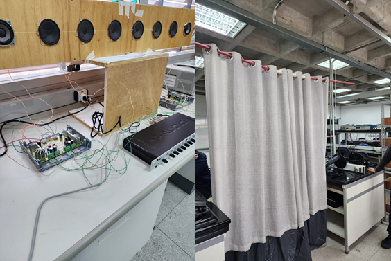
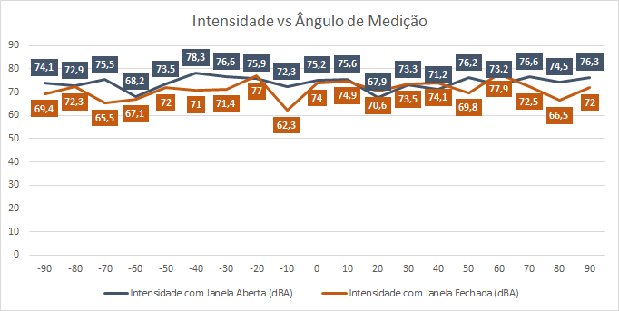
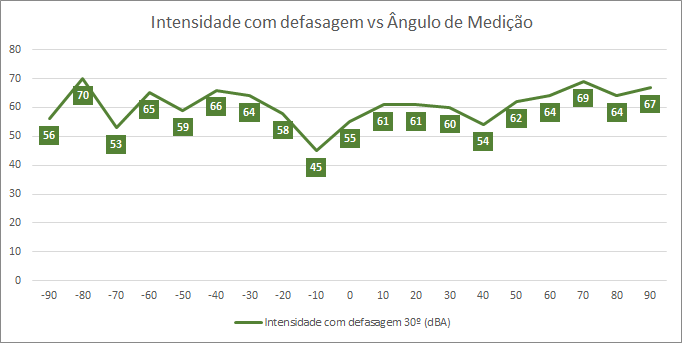

Primeiramente, foi feita a calibragem do nível individual de cada alto-falante utilizando o celular com o app Decibel-X. Após isso foi feito a medição da intensidade medida a 1,5m do centro do line array, em passos de 10° para a direita e para a esquerda.
 Figura 1: a) Line array de 8 falantes na bancada para medição. b) cortina colocada a 2m de distância à frente do line array para reduzir a dispersão do som na sala de forma a reduzir as reflexões captadas na medição.
A Tabela 1 abaixo contém o resultado das medições para os alto falantes sem defasagem. Vale salientar que devido ao fato do grupo querer verificar como a janela aberta poderia interferir nas medições, o experimento foi realizado duas vezes.
Tabela1: intensidade a 1,5m para cada 10° ao redor do centro do line array sem defasagem entre os alto falantes.
| Ângulo [°] | SPL [dBA] janela aberta | SPL [dBA] janela fechada |
|---|---|---|
| -90 | 74,1 | 69,4 |
| -80 | 72,9 | 72,3 |
| -70 | 75,5 | 65,5 |
| -60 | 68,2 | 67,1 |
| -50 | 73,5 | 72,0 |
| -40 | 78,3 | 71,0 |
| -30 | 76,6 | 71,4 |
| -20 | 75,9 | 77,0 |
| -10 | 72,3 | 62,3 |
| 0 | 75,2 | 74,0 |
| 10 | 75,6 | 74,9 |
| 20 | 67,9 | 70,6 |
| 30 | 73,3 | 73,5 |
| 40 | 71,2 | 74,1 |
| 50 | 76,2 | 69,8 |
| 60 | 73,2 | 77,9 |
| 70 | 76,6 | 72,5 |
| 80 | 74,5 | 66,5 |
| 90 | 76,3 | 72,0 |
 Figura 2: curvas de resposta de intensidade [dBA] X ângulo [°] para as medições com janela aberta e com janela fechada.
É possível observar que a janela aberta ou fechada contribui com resultados diferentes. Nos ângulos negativos as medições com janela aberta ficaram com valores menores do que quando comparadas com a janela fechada. Nos ângulos positivos não foi possível observar o mesmo padrão. Diante deste resultado, não foi possível identificar um padrão que determine as direções de interferências construtivas e destrutivas das ondas conforme se esperava. Não havendo diferenças de simetria significativas no espaço próximo ao line array, o esperado era um comportamento simétrico para ambos os casos. Uma possível causa para estes resultados é se os alto falantes tiverem resposta de fase diferente, dado que podem haver irregularidades na produção de cada unidade.
Em seguida, o grupo repetiu o processo de coleta de dados do passo anterior, entretanto, com os áudios de cada alto falante defasados para intensificar o som no ângulo de 30° (Line Phased Array). Os resultados podem ser observados na Tabela 2 abaixo:
Tabela 2: intensidade a 1,5m para cada 10° ao redor do centro do line array com defasagem de 30° entre os alto falantes.
| Ângulo [°] | SPL [dBA] |
|---|---|
| -90 | 56 |
| -80 | 70 |
| -70 | 53 |
| -60 | 65 |
| -50 | 59 |
| -40 | 66 |
| -30 | 64 |
| -20 | 58 |
| -10 | 45 |
| 0 | 55 |
| 10 | 61 |
| 20 | 61 |
| 30 | 60 |
| 40 | 54 |
| 50 | 62 |
| 60 | 64 |
| 70 | 69 |
| 80 | 64 |
| 90 | 67 |
 Figura 3: curva de resposta de intensidade [dBA] X ângulo [°] para a medição com defasagem de 30° e janela fechada.
Nota-se uma atenuação em -10° e dois lobos aproximadamente simétricos em torno desta posição. Tal resultado não condiz com o lobo centralizado em 30° que se esperava para esta configuração.